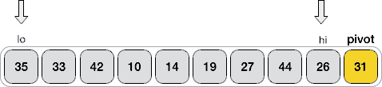
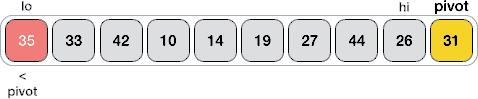
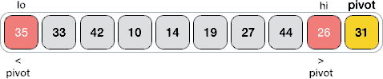
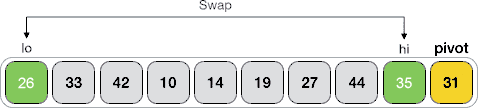
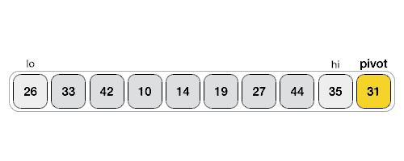

快速排序算法
提到排序算法，多数人最先想到的就是快速排序算法。快速排序算法是在分治算法基础上设计出来的一种排序算法，和其它排序算法相比，快速排序算法具有效率高、耗费资源少、容易实现等优点。
快速排序算法的实现思路是：
1) 选择序列中最后一个元素 31 作为中间元素，将剩余元素分为两个子序列，如下图所示：
分得的两个子序列是 {26, 27, 19, 10, 14} 和 {33, 44, 35, 42}，前者包含的所有元素都比 31 小，后者包含的所有元素都比 31 大，两个子序列还可以再分。
2) 重复第一步，将 {26, 27, 19, 10, 14} 看作新的待排序序列：
3、重复第一步，将 {33, 44, 35, 42} 看作新的待排序序列：
最终，原序列变成了 {10, 14, 19, 26, 27, 31, 33, 35, 42, 44}，这是一个升序序列。如下是整个过程对应的伪代码：
这里给大家讲解一种方法，以 {35, 33, 42, 10, 14, 19, 27, 44, 26, 31} 为例，选择 31 作为中间元素，具体的实现过程为：
1) 建立 2 个指针（命名为 lo 和 hi），分别指向序列中第一个元素和倒数第 2 个元素，如下图所示：
2) lo 指针向右移动，当指向的元素不小于 31 时暂停。显然，当前指向的 35 > 31，所以 lo 暂时不移动；
3) hi 指针向左移动，当指向的元素不大于 31 时暂停。显然，当前指向的 26< 31，所以 hi 暂时不移动；
4) 交换 lo 和 hi 所指元素的位置，如下图所示：
5) 重复执行 2~4 步，直至 lo ≥ hi。此时，将 pivot 元素与 lo 所指元素交换位置。下面的动画演示了整个分割的过程：
如下是用快速排序算法对 {35, 33, 42, 10, 14, 19, 27, 44, 26, 31} 完成升序排序的 Java 程序：
如下是用快速排序算法对 {35, 33, 42, 10, 14, 19, 27, 44, 26, 31} 完成升序排序的 Python 程序：
以上程序的输出结果均为：
快速排序算法的实现思路是：
- 从待排序序列中任选一个元素（假设为 pivot）作为中间元素，将所有比 pivot 小的元素移动到它的左边，所有比 pivot 大的元素移动到它的右边；
- pivot 左右两边的子序列看作是两个待排序序列，各自重复执行第一步。直至所有的子序列都不可再分（仅包含 1 个元素或者不包含任何元素），整个序列就变成了一个有序序列。
举个例子，使用快速排序算法对 {35, 33, 42, 10, 14, 19, 27, 44, 26, 31} 进行升序排序的过程为：真正实现快速排序算法时，我们通常会挑选待排序序列中第一个元素或者最后一个元素作为中间元素。
1) 选择序列中最后一个元素 31 作为中间元素，将剩余元素分为两个子序列，如下图所示：
分得的两个子序列是 {26, 27, 19, 10, 14} 和 {33, 44, 35, 42}，前者包含的所有元素都比 31 小，后者包含的所有元素都比 31 大，两个子序列还可以再分。
2) 重复第一步，将 {26, 27, 19, 10, 14} 看作新的待排序序列：
- 选择最后一个元素 14 作为中间元素，将剩余元素分为 {10} 和 {19, 26, 27} 两个子序列。其中 {10} 仅有一个元素，无法再分；{19, 26, 27} 可以再分。
- 将 {19, 26, 27} 看作新的待排序序列，选择最后一个元素 27 作为中间元素，分得的两个子序列为 {19, 26} 和 {}。其中 {} 是空序列，无法再分；{19, 26} 可以再分。
- 将 {19, 26} 看作新的待排序序列，选择最后一个元素 26 作为中间元素，分得的两个子序列为 {19} 和 {}，两个子序列都无法再分。
3、重复第一步，将 {33, 44, 35, 42} 看作新的待排序序列：
- 选择最后一个元素 42 作为中间元素，将剩余元素分为 {33, 35} 和 {44} 两个子序列。其中 {33, 35} 可以再分；{44} 仅有一个元素，无法再分。
- 将 {33, 35} 看作新的待排序序列，选择最后一个元素 35 作为中间元素，分得的两个子序列为 {33} 和 {}，两个子序列都无法再分。
最终，原序列变成了 {10, 14, 19, 26, 27, 31, 33, 35, 42, 44}，这是一个升序序列。如下是整个过程对应的伪代码：
输入 arr[] // 输入待排序序列
quick_sort(arr[] , p , q): // [p , q] 用于指定当前要处理的子序列
if q-p <= 0: // 如果序列中没有元素或者仅包含 1 个元素，则直接返回
return
else:
par <- partition(arr , p , q) // partition()函数用于将 [p,q] 区域分割成 [p, par-1] 和 [par+1, q] 区域，[p, par-1] 区域的元素都比 pivot 小，[par+1 , q] 区域的元素都比 pivot 大，函数会返回中间元素 pivot 所在的位置。
quick_sort(arr , p , par-1) // 将 [p , par-1] 作为待排序序列，重复进行分割
quick_sort(arr , par+1 , q) // 将 [par+1 , q] 作为待排序序列，重复进行分割
借助伪代码，我们了解了快速排序的实现过程，接下来要解决的问题是如何设计 partition() 函数，即如何将 [p, q] 区域的待排序序列分成 [p, par-1] 和 [par+1, q] 两个子序列，同时保证 [p, par-1] 区域内的所有元素比 par 位置上的元素小，[par+1, q] 区域内的所有元素比 par 位置上的元素大？最坏情况下，快速排序算法的时间复杂度为
O(n2)，理想状态对应的时间复杂度为O(nlogn)。
这里给大家讲解一种方法，以 {35, 33, 42, 10, 14, 19, 27, 44, 26, 31} 为例，选择 31 作为中间元素，具体的实现过程为：
1) 建立 2 个指针（命名为 lo 和 hi），分别指向序列中第一个元素和倒数第 2 个元素，如下图所示：

2) lo 指针向右移动，当指向的元素不小于 31 时暂停。显然，当前指向的 35 > 31，所以 lo 暂时不移动；

3) hi 指针向左移动，当指向的元素不大于 31 时暂停。显然，当前指向的 26< 31，所以 hi 暂时不移动；

4) 交换 lo 和 hi 所指元素的位置，如下图所示：

5) 重复执行 2~4 步，直至 lo ≥ hi。此时，将 pivot 元素与 lo 所指元素交换位置。下面的动画演示了整个分割的过程：

可以看到，最终元素 31 左侧的元素都比它小，右侧的元素都比它大。如下是实现 partition() 函数的伪代码：
partition(arr[] , p , q): // [p , q] 为要分割的区域
lo <- p // lo、hi 准备遍历 [p , q-1] 区域
hi <- q-1
pivot <- arr[q] // 以 [p , q] 区域中最后一个元素作为中间值
while true： // 一直循环，直到执行 end while
while arr[lo] < pivot: // lo 从左往右遍历，直至找到一个不小于 pivot 的元素
lo <- lo+1
while hi>0 and arr[hi] > pivot: // hi 从右往左遍历，直至找到一个不小于 pivot 的元素
hi <- hi-1
if lo ≥ hi: // 如果 lo 大于等于 hi，退出循环
end while
else:
swap arr[lo] , arr[hi] // 交换 arr[lo] 和 arr[hi] 的值
lo <- lo+1 // 分别将 lo 和 hi 向前移动一步，准备遍历后续的元素
hi <- hi-1
swap arr[lo] , arr[q] // 跳出循环后，交换 arr[lo] 和 arr[q] 的值
return lo // 返回 lo 的值，也就是中间值所在序列中的位置
快速排序算法的实现
结合伪代码，如下是用快速排序算法对 {35, 33, 42, 10, 14, 19, 27, 44, 26, 31} 完成升序排序的 C 语言程序：
#include <stdio.h>
// arr 为待排序数组，[p,q] 用于指定排序区域
int partition(int* arr, int p, int q) {
int temp = 0;
// lo、hi分别表示指向首个元素和倒数第 2 个元素的指针
int lo = p;
int hi = q - 1;
//pivot 表示选中的中间值
int pivot = arr[q];
while (1)
{
//lo从左往右遍历，直至找到一个不小于 pivot 的元素
while (arr[lo] < pivot) {
lo++;
};
//hi从右往左遍历，直至找到一个不大于 pivot 的元素
while (hi > 0 && arr[hi] > pivot) {
hi--;
}
//如果 lo≥hi，退出循环
if (lo >= hi)
{
break;
}
else {
//交换 arr[lo] 和 arr[hi] 的值
temp = arr[lo];
arr[lo] = arr[hi];
arr[hi] = temp;
// lo 和 hi 都向前移动一个位置，准备继续遍历
lo++;
hi--;
}
}
//交换 arr[lo] 和 arr[q] 的值
temp = arr[lo];
arr[lo] = pivot;
arr[q] = temp;
//返回中间值所在序列中的位置
return lo;
}
void quick_sort(int* arr, int p, int q) {
int par;
//如果待排序序列不存在，或者仅包含 1 个元素，则不再进行分割
if (q - p <= 0) {
return;
}
else {
//调用 partition() 函数，分割 [p,q] 区域
par = partition(arr, p, q);
//以 [p,par-1]作为新的待排序序列，继续分割
quick_sort(arr, p, par - 1);
//以[par+1,q]作为新的待排序序列，继续分割
quick_sort(arr, par + 1, q);
}
}
int main()
{
int i = 0;
int arr[10] = { 35,33,42,10,14,19,27,44,26,31 };
//对于 arr 数组中所有元素进行快速排序
quick_sort(arr, 0, 9);
for (; i < 10; i++) {
printf("%d ", arr[i]);
}
return 0;
}
如下是用快速排序算法对 {35, 33, 42, 10, 14, 19, 27, 44, 26, 31} 完成升序排序的 Java 程序：
public class Demo {
public static int partition(int[] arr, int p, int q) {
int temp = 0;
// lo、hi分别表示指向首个元素和倒数第 2 个元素的指针
int lo = p;
int hi = q - 1;
// pivot 表示选中的中间值
int pivot = arr[q];
while (true) {
// lo从左往右遍历，直至找到一个不小于 pivot 的元素
while (arr[lo] < pivot) {
lo++;
}
// hi从右往左遍历，直至找到一个不大于 pivot 的元素
while (hi > 0 && arr[hi] > pivot) {
hi--;
}
// 如果 lo≥hi，退出循环
if (lo >= hi) {
break;
} else {
// 交换 arr[lo] 和 arr[hi] 的值
temp = arr[lo];
arr[lo] = arr[hi];
arr[hi] = temp;
// lo 和 hi 都向前移动一个位置，准备继续遍历
lo++;
hi--;
}
}
// 交换 arr[lo] 和 arr[q] 的值
temp = arr[lo];
arr[lo] = pivot;
arr[q] = temp;
// 返回中间值所在序列中的位置
return lo;
}
public static void quick_sort(int[] arr, int p, int q) {
//如果待排序序列不存在，或者仅包含 1 个元素，则不再进行分割
if (q - p <= 0) {
return;
} else {
//调用 partition() 函数，分割 [p,q] 区域
int par = partition(arr, p, q);
//以 [p,par-1]作为新的待排序序列，继续分割
quick_sort(arr, p, par - 1);
//以[par+1,q]作为新的待排序序列，继续分割
quick_sort(arr, par + 1, q);
}
}
public static void main(String[] args) {
int[] arr = new int[] { 35, 33, 42, 10, 14, 19, 27, 44, 26, 31 };
// 对于 arr 数组中所有元素进行快速排序
quick_sort(arr, 0, 9);
for (int i = 0; i < arr.length; i++) {
System.out.print(arr[i]+" ");
}
}
}
如下是用快速排序算法对 {35, 33, 42, 10, 14, 19, 27, 44, 26, 31} 完成升序排序的 Python 程序：
def partition(arr,p,q):
#lo、hi分别表示指向首个元素和倒数第 2 个元素的索引
lo = p
hi = q-1
#pivot 表示选中的中间值
pivot = arr[q]
while True:
#lo从左往右遍历，直至找到一个不小于 pivot 的元素
while arr[lo] < pivot:
lo = lo + 1
#hi从右往左遍历，直至找到一个不大于 pivot 的元素
while hi > 0 and arr[hi] > pivot:
hi = hi - 1
#如果 lo≥hi，退出循环
if lo >= hi:
break
else:
#交换 arr[lo] 和 arr[hi] 的值
arr[lo],arr[hi] = arr[hi],arr[lo]
#lo 和 hi 都向前移动一个位置，准备继续遍历
lo = lo + 1
hi = hi - 1
#交换 arr[lo] 和 arr[q] 的值
arr[lo],arr[q] = arr[q],arr[lo]
#返回中间值所在序列中的位置
return lo
def quick_sort(arr,p,q):
#如果待排序序列不存在，或者仅包含 1 个元素，则不再进行分割
if q - p <= 0:
return
#调用 partition() 函数，分割 [p,q] 区域
par = partition(arr,p,q)
#以 [p,par-1]作为新的待排序序列，继续分割
quick_sort(arr,p,par-1)
#以[par+1,q]作为新的待排序序列，继续分割
quick_sort(arr,par+1,q)
arr=[35,33,42,10,14,19,27,44,26,31]
#对于 arr 列表中所有元素进行快速排序
quick_sort(arr,0,9)
print(arr)
以上程序的输出结果均为：
10 14 19 26 27 31 33 35 42 44
关注公众号「站长严长生」，在手机上阅读所有教程，随时随地都能学习。本公众号由C语言中文网站长亲自运营，长期更新，坚持原创。

微信扫码关注公众号